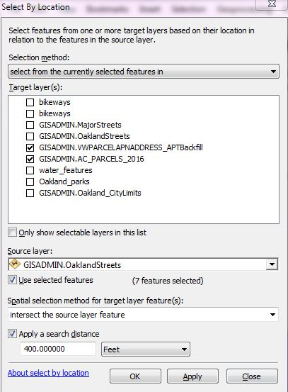
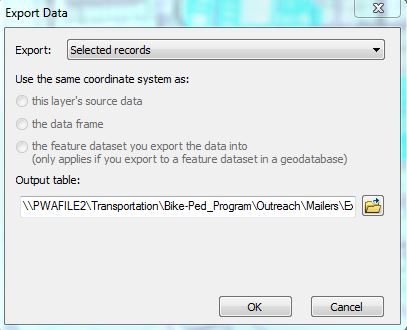

GIS to Mailing List How-to
This is to develop a mailing list for a bikeway project mailer. In addition to a list in Excel format, this process will document the mailing area for future reference.
1. Open
\\oakland\pwa\Transportation\Bike-Ped_Program\Outreach\Mailers\mailing-list-map.mxd.
2. Select street segments from the “GISADMIN.OaklandStreets” layer. This is more easily done when you isolate the layer by making it the only selectable layer; to do this right click on the layer>
Selection>
Make This the Only Selectable Layer.
3. In Data view, use the Select Features arrow tool (the
Select by Rectangle option works well) to select your bikeway segment(s) from the GISADMIN.OaklandStreets layer (using shift>click or other method to select multiple line segments).
4. Go to the Selection in the top menu, Select by Location, and select features from these two layers: (1) GISADMIN.AC_PARCELS_2016 and (2) GISADMIN.VWPARCELAPNADDRESS_APTBackfill. (If 2016 sounds old at the time you are reading this, you should probably ask if there are more current parcel layers available.)
5. Using source layer GISADMIN.OaklandStreets, create a 400 ft buffer as shown below.

5. Take a screen shot/snip of the map showing the highlighted parcels. Save it as a .jpg in the project's outreach folder to document the mailing area. Create a bookmark in the .mxd for this mailing list.
6. Open the Attribute table of each of the parcel layers. Export selected records to .dbf format (dBase tables). At the Export Data window (seen below), click on the file icon to the right of the Output table to save table (dbf format, dBase Table in the "Save as Type" drop-down menu. Save tables in the folder described in the previous step (Bikeways-Striping>Outreach).

9. Open each .dbf in Excel. Prepare each sheet to be combined into a single list by (1) using the same headers for the columns and putting them in the same order (Street #, Street, Unit, City, Zip) and (2) deleting unneeded columns. Combine the two into one .csv file and retitle into a new tab called “final” (or similar).
10. Remove erroneous addresses and duplicates:
- In the Address field, search and replace for “AVE”—change to “AV” and for “BLVD” change to “BL.” Scan the data to see if there are other possible duplicate suffixes. (If desired, you can change AV back to AVE—but you can’t do this in the other order. Try it and weep!)
- Go to Data, Remove Duplicates. All fields should be checked. This should remove duplicates / bad data, but scan the data to check.
- Delete all rows where the address number is "0."
11. Clean up the list and finalize.
- Sort by Unit. Add a column called “comma.” For lines with an entry in the unit field, enter a comma followed by a space, followed by a pound sign.
- Select the City column, search on Oakland and replace with Oakland, CA.
- Add a Resident column and populate it with the word Resident.
- Save this spreadsheet with a name that matches the map .pdf convention in the project’s "Outreach" folder in the bikeway-striping directory.
- Delete the original .dbf and .xml files.